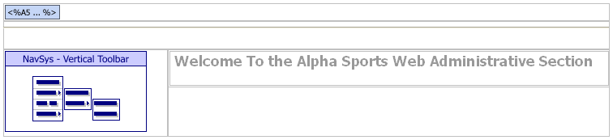
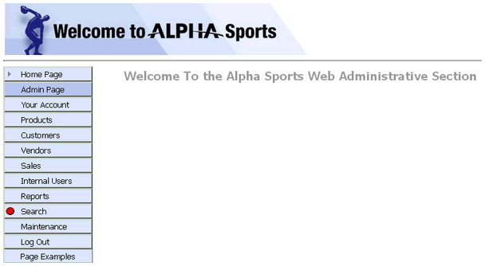

ASWINDEX.A5W
Purpose
The ASWINDEX.A5W page is the landing page for internal users. The page appears after an internal user logs in, but before he or she uses the navigation component to select another page.
Description
The ASWINDEX.A5W page contains the NAV_INT navigation component.
Links
The following links display the ASWINDEX.A5W page.
the Admin Page entry of the NAV_INT navigation component
the Your Account > Admin Index entry of the NAV_MAIN navigation component
-
if you login as an internal user, the LG_LOGIN login component
the ASWPROCESSING.A5W page

ASWINDEX.A5W in the WYSIWYG tab of the HTML Editor
. 
ASWINDEX.A5W in the Browser
Edits to the Page Source
When you look at ASWCUSTOMERS.A5W with the Source tab of the HTML Editor, you will see a large amount of HTML and Xbasic code. The HTML Editor placed almost all of it there automatically, as we used the WYSIWYG tab to place the tables, text, graphics, and components on the page. There are a few interesting exceptions, where we changed the page code through the Source tab.
Component Property Overrides
We added one override of the navigation component's properties. The location = "Admin Page" highlights the navigation component's "Admin Page" tab.
|
... navigation component code inserted by the HTML Editor with tmpl_nav_int location = "Admin Page" componentName = "nav_int" end with |
Page Security Information
Login Required
Groups Allowed > Accounting, Administrators, Clerical, Marketing
See Also
Supported By
Alpha Five Version 8 Professional Edition and Above